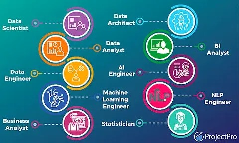
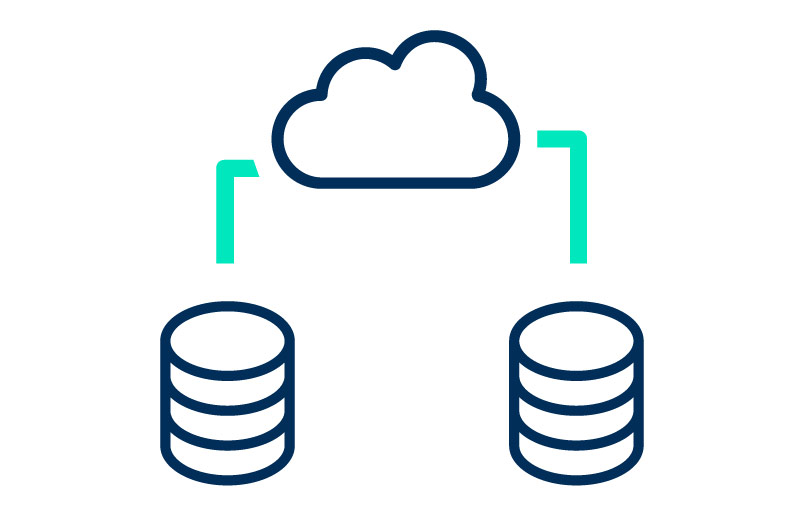
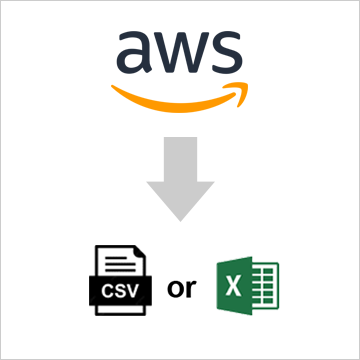

The World Port Index Data contains the location, physical characteristics, facilities
and services offered by major ports and terminals world-wide. The project involves building
a pipeline to extract, transform and load the data from an old Microsoft Access database to a
modern relational database management system known as PostgreSQL.

This project contain the pipeline for extracting exchange rates data from XE API, transforming the data and load to a Postgresql Database. Gurufx is a leading African currency trading company
BUSINESS OF GURU FX
helping customers to exchange their currencies or buy foreign currencies
GAP
Was done manually, but now wants to digitize it
ROLE OF ME AS AN ENGINEER
• building a rate conversion platform.
• up-to-date data on exchange rates (US Dollar to selected African currencies) to be served on the front-end of the application.
• build an ETL pipeline to get the exchange rate data from a third-party provider (XE).
FROM THE API
• Your pipeline is expected to pull the rates for 7 African countries and
AUTOMATION
• should run 2 times in a day, first at 1am and second at 11pm.
• Rates should be saved per day meaning, no duplicate records for a single date.
Jazzy Investment, one of 10Alytics clients is a stockbroking firm that deals in issuance and trading of stocks on behalf of its customers in the Nigeria Stock Exchange. For the analytics team to analyze market trends and place the best bet on company stocks, they require the daily stock exchange data published on here: https://afx.kwayisi.org/ngx/
Your task: As one of the students 10Alytics data engineering training program, we require you to build a web scrapper (data pipeline) to Extract, Transform and load the listed companies/securities data from https://afx.kwayisi.org/ngx/ to a Postgresql database. The data required is under the heading Listed companies/securities This data will be consumed by our client (Jazzy Investment) in the database for their stock trading analytics.
Royal Digital Consult is a digital firm servicing the digital creative industry. Its customers are mostly young people who work as freelance digital marketers, content creators, software engineers, data analysts, data engineers, copy writers, online instructors etc. The firm has two types of customers; clients and freelancers. The objective of the firm is to link freelancers to clients. To prevent fraud, the firm has embedded into their systems an escrow service that holds payments from the client and release to the freelancer only when works is completed and the client is satisfied. As a data engineer, you are tasked to design an end-to-end database system for the firm including;
a) Designing a data model using the star schema showing relationships between entities.
b) Creating an actual database system including setting constraints
c) Creating relationships between the various entities
d) Inserting available records into the database
e) Altering specifics where necessary
f) Updating records
g) Querying data from the completed database system to solve business questions.
.

10Alytics Job Board Service:
10Alytics is a Leading Data and Strategy Firm that provides technology training service to help its clients acquire industry relevant tech skills to propel their tech career. As part of expansion, we want to provide job placement services to our trainees. We have therefore hired you as our Data Engineer to help us build a data infrastructure
solution that provides daily job update on our job board.
Project requirement:
You’re expected to build a data pipeline to extract daily job posting data from a
public API available here: https://rapidapi.com/letscrape6bRBa3QguO5/api/jsearch/. You need to first create an account on Rapid API website in other to use this API. Details on how to query the API is available on the page.
You’re expected to follow the following steps:
1. Design a pipeline architecture diagram to show the flow of data from the source to the destination.
2. Your pipeline should extract raw data of the jobs posted for the current day and specifically Data Engineer and Data Analyst jobs posted in either UK, Canada or the US.
3. Your pipeline should stage the raw data from step 1 above in an Amazon S3 bucket called “raw_jobs_data”. The raw data should be saved in a JSON format.
4. Your pipeline should transform the raw data and load into another S3 bucket called “transformed_jobs_data”. The transformed data should be saved in a CSV format. Your transformed data should contain only these columns:
employer_website, job_id, job_employment_type, job_title, job_apply_link, job_description, job_city, job_country,
job_posted_at_timestamp, employer_company_type.
5. Your pipeline should finally pull data from the transformed_jobs_data bucket and load into an Amazon Redshift data warehouse.
6. Bonus. Schedule your pipeline to run once in a day (choose anytime convenient for you) using Apache Airflow.
7. Your code should be hosted into a Github repository. Note that your commit
history will be used to determine how you went about solving the problem. So,
make sure you commit your code intermittently to show your working.
8. Your repository should contain a README file which has detailed information
about the project and how to run the code.
9. Your project should contain (1) etl.py file (which does the extraction,
transformation and loading (2) A util.py file (which contains utility functions
e.g database connection) (3) A main.py file (where the entire program can be
run from) and any other python file you dim fit for the purpose of organization.
Submission:
You’re expected to submit a single link to the Github repository hosting the project..

Donec eget ex magna. Interdum et malesuada fames ac ante ipsum primis in faucibus. Pellentesque venenatis dolor imperdiet dolor mattis sagittis magna etiam.
'Chicken Links' is a restaurant which allows users to input data in order to request for food to purchase. The data collected over time was collected in a log data which had been given
This project builds a full fletched calculator from scratch

'Chicken Links' is a restaurant which allows users to input data in order to request for food to purchase. The data collected over time was collected in a log data which had been given

This project builds a ETL Pipeline to migrate data in excel to AWS cloud.

This project builds a full fletched calculator from scratch